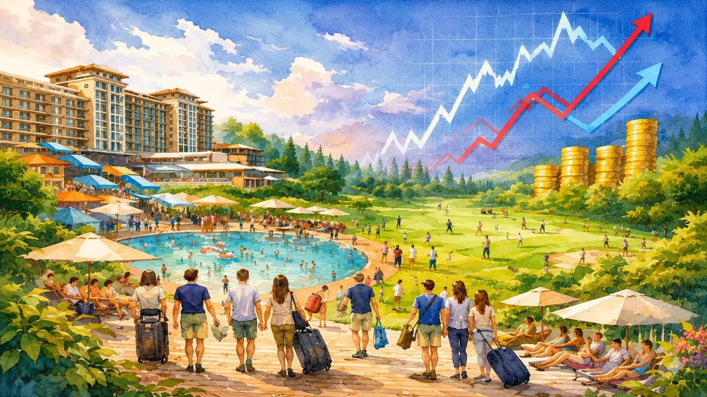

대규모 개발과 과시적 소비의 시대가 저물고, 시장은 조용한 휴식과 내면의 회복, 초개인화된 경험을 요구하고 있다. 콰이어트케이션과 디지털 디톡스, 올인클루시브 서비스로 대표되는 변화의 흐름 속에서 골프·리조트 산업은 어떤 방향으로 재편되고 있는가. CU레저가 시장의 변곡점에서 레저 산업의 다음 국면을 짚어본다.

시장은 점진적으로 변화했고, 코로나가 그 진폭을 키웠다
시장은 점진적으로 변화했으며 코로나를 기점으로 그 변화의 진폭과 방향성에 상당한 영향을 미쳤다는 게 업계의 중론이다.
코로나 팬데믹 기간 하늘길이 막히면서 기성의 골퍼는 국내 골프 수요의 증가를 야기했고, 사회적 거리두기로 인한 활동의 제약으로 새로운 취미활동이 필요했던 젊은 세대의 요구는 부와 직관된 자기표현의 수단으로 골프를 선택했다.
이른바 MZ에게 힙한 스포츠가 된 골프는 동기간 주식·코인 등의 투자 열풍과 함께 자연스럽게 젊은 세대를 골프장으로 이끌었고, 대한민국의 골프 인구는 순식간에 500만 명을 넘어서게 된다.
국내 골프 인구
조정된 그린피
사이트별 객실 수
이러한 골프 광풍은 그린피의 상승과 각종 용품들의 고급화를 유발하였으며, 엔데믹과 경기 침체는 새로운 "힙한 취미"를 감당할 수 없었던 젊은 세대들을 골프장 밖으로 밀어냈다.
코로나 기간 하늘 높은 줄 모르고 치솟았던 그린피는 2025년 12월 기준으로 5만원대 그린피를 손쉽게 찾아볼 수 있을 정도로 조정되었다. 또한 대기업부터 골프장 이용을 제한하면서 회원권 거래량 또한 코로나 이전 수준으로 회귀하였다.
호텔·콘도미니엄 시장도 마찬가지
소노, 한화, 롯데 호텔앤리조트 등 체인형 리조트 회원권의 판매율이 급감하고, 지난 수년간 높은 분양 실적을 보였던 아난티의 회원권 역시 시장에 매도가 증가하고 있으나 매수를 찾기 어려운 상황이다.
위탁운영의 시대 — 자산 부담을 줄이는 전환
이에 따라 자산 부담을 줄이고 수익성을 높이는 전략으로 기업들이 위탁운영을 확대하는 모습을 보이고 있다.
레저업계의 "Boom"은 사라졌으며 경기의 회복을 낙관적으로만 보기는 어려운 상황이다. 어떤 불황이든 틈새는 존재하였고, 새로운 키워드들은 그 힌트를 제공한다.
콘도미니엄, 세 번의 세대 교체
1세대 콘도미니엄은 유명 관광지에 자리 잡은 숙박시설의 이미지였으며, 2세대 콘도미니엄은 시즌에 유행처럼 몰리는 스키장과 워터파크의 이미지였다. 트렌디한 경험을 해보려는 군중의 심리가 반영된 시장은 전국에 스키장 대비 진입 장벽이 낮은 워터파크를 조성하게 만들었다.
3세대의 콘도미니엄은 아난티를 중심으로 성장한 고급화 브랜딩이다. 30평형 4인 기준이었던 기존의 아파트형 콘도미니엄의 기준을 무시하고 대형화·고급화를 이루었다.
아난티는 주력 객실을 펜트하우스(100평형) - 4인실로 셋팅하였으며 소규모 부대시설 및 문화 컨텐츠를 구성했다. 설해원(양양)은 300평형대의 객실을 선보였으며, 비록 개발 행위가 진행되진 않았지만 세계 3대 리조트 브랜드 중 하나라는 카펠라가 국내 런칭을 준비하였고 대형 객실부터 모집이 마감되었다. 호텔 신라에서 운영하는 신라모노그램(강릉) 역시 대형 평형부터 마감되었다.
이후 코로나에 따른 사회적 거리두기로 인해 기간 동안 "소규모 풀빌라 펜션"과 단독채 중심의 "스테이" 그리고 캠핑 문화가 한 부분을 차지했다.
새로운 키워드 — 시장은 어디로 가는가
이러한 점진적 변화 이후 엔데믹 이후부터 현재까지 몇 가지 새로운 키워드가 모습을 드러냈다. 최근에 부상하는 키워드의 경향성을 보면 변화의 방향은 명확하다.
시장의 방향은 일률적 여행에서 초개인화로 변화하고 있으며, 주변에 보여지는 나를 인식하기보다는 스스로에게 진정한 쉼을 선사하고 복잡함을 배제하며 자신을 깊이 들여다볼 수 있는 방향으로 전환하는 것이 세계적인 여행의 트렌드이다.
- 콰이어트케이션·단절여행: 바쁜 일상에서 벗어나 내면의 평화를 찾기 위해 조용하고 평화로운 장소에서 회복과 휴식을 추구. 외부 활동보다 자연 속에서 혼자만의 시간을 통해 에너지를 얻으려 하는 니즈를 반영.
- 디지털 디톡스: 넘쳐나는 정보의 홍수 속에서 허우적대던 현대인들이 휴가 기간만이라도 원하는 것.
- 올인클루시브 서비스: 계속되는 선택보다는 던져진 환경에서 여유롭게 즐길 수 있는 서비스를 선호.
- 소버큐리어스(Sober + Curious): 술을 마실 수 있는 사람도 일부러 술을 마시지 않는 라이프스타일. 젊은층을 중심으로 확산되었으며 스트레스와 피로도 높은 현실 사회에서 자극적이지 않고 무해한 환경에 대한 갈증을 나타내는 사회 현상.
사회는 복잡함보다는 단순함, 쾌락보다는 문화와 경험, 보여지는 모습보다는 내면의 충전을 여행의 트렌드로 받아들이는 듯하다.
휴가 기간의 몇 장의 사진을 통해 다시 한번 나의 Social-Position을 증명하는 것이 아니라,
여행과 휴가를 진정으로 충전하고 회복할 수 있는 하나의 도구로 보는 것이다.
국내 대형 vs 해외 스몰 럭셔리
스몰&럭셔리 + 올인클루시브
전 세계 30개 이상의 초고급 리조트를 보유하고 있는 아만(Aman Resorts)는 사이트별 약 30~55개의 소규모 객실을 운영하며 자연 속에서의 가치 있는 쉼과 품격 있는 올인클루시브 서비스를 제공한다.
일본의 호시노야 리조트는 소규모 객실을 바탕으로 일본 전통 환대와 각 지역의 특색을 담은 럭셔리 숙박 브랜드로, 자연·문화·체험을 함께 즐기는 프리미엄 여행 경험을 제공한다.
대형 규모의 경제 모델
반면 국내 리조트는 사이트별 300객실 이상의 규모의 경제를 통한 운영 방식을 고수해 왔다.
트렌드는 소규모의 경험과 휴식을 위주로 한 올인클루시브 서비스로 변화하고 있다. 스몰&럭셔리 리조트의 성장이 기대된다.
장기적 관점에서의 새로운 포지셔닝
코로나 팬데믹 기간을 거치며 전 세계는 약 3~4년간의 타율적 개인화를 경험하였고, 그 효용성과 기능에 대하여 인지하게 되었다.
지금의 대형 리조트에 대한 수요의 감소는 현대인의 심리에 따른 트렌드를 반영하는 것이 아닐까? 장기적 관점에서의 새로운 업계의 포지셔닝이 필요할 것으로 판단된다.